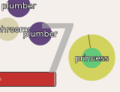

|
 |
 |
 |
 |
 |  |
Eight minigames about a plumber who collects coins, saves a princess, kills turtles and eats mushrooms.
Click on the thumbnails to select game. Each minigame provides further instructions. You can play them in any order, as many times as you want.
Created with Game-o-matic.
Enjoy.